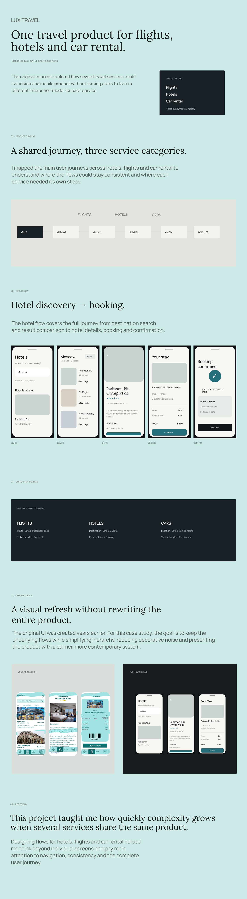

Concept mobile app · UX/UI
Lux Travel
A multi-service travel concept covering hotels, flights and car rental through an end-to-end booking experience.

Concept mobile app · UX/UI
A multi-service travel concept covering hotels, flights and car rental through an end-to-end booking experience.
